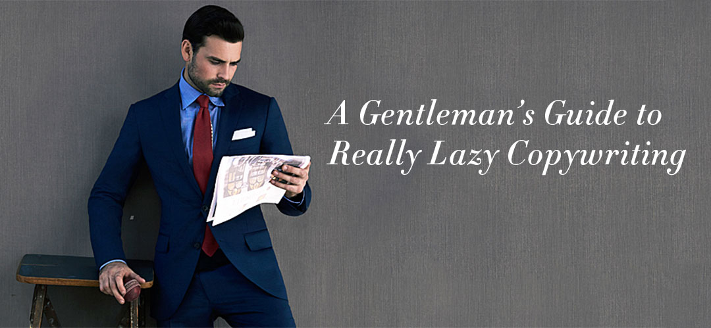

This month marks the 4th anniversary of A Good Man, which I started with my best-friend-turned-business-partner Julian Burak in 2009. I never would have thought that this hairbrained idea - that men need someone, anyone to understand the challenges they go through in dressing better and help them become the cool guys they always wanted to be - would have become a full-time job and a sought-after consultancy.
So today, we offer a retrospective.
I'm sitting here, in a bar full of dudes, drinking my first beer of 2014 and wondering: does any of this fucking matter anymore?
When we started this business four years ago there was a need. It was a period where the average guy had never worn a pocket square, didn't know what brogues were and taking an interest in dressing well was a bold, brave thing to do.
But now, four years later, even the most ho-hum labels have jumped on the foppish-sartorial bandwagon. All now have to product a 'classic' line that caters to their new target demographic: the whisky-drinking dandies. (Ironically, this 'new' customer is the exact same guy who used to wear the graphic tees and ripped jeans that those very same labels used to produce - his tastes have just changed.)
We don't need another 'Gentleman's Guide' to anything; we don't need to learn about 'The Art of Whiskey' and we definitely don't need another lookbook with a guy in a navy suit, brown brogues and a combover.
It's 2014 and proper is boring. Everyone knows the basics, everyone knows how clothes should fit. So what's next - and what is needed - is people who are brave enough to experiment. People who know the rules and want to break them.
It's so much easier to hate than to like.
If we accept that contemporary men's style is going through a transitory period away from the norm and towards something different, we also need to accept that there will be a great deal of internet backlash.
I was speaking to a friend of mine - a tailor in Melbourne, Australia - who is pictured in this Tumblr-famous image:

This man, who outfits thousands of men every year and is more knowledgeable about modern suiting that anyone I know, gets so much backlash for the way he dresses.
"People who comment on men's style posts are funny. Lots appreciate when you try new things and wear things in a unique way, but others absolutely loathe it, as though it makes them uncomfortable when their precious rules are broken. They tell me my jacket's stance is too high, and that my pants don't elongate my legs enough. But what if I want to make my legs look shorter? What if I don't want to look like I learned how to dress from an infographic?"
This conversation happened two years ago, and as time passes his words become more and more true. It's so easy to say something is 'wrong' in men's style, and even easier to demean those that dare be different.
People are jerks, you look great
This leaves us at an awkward position. The articles on this site - while still garnering 50,000 to 100,000 monthly views, despite not having written anything for a year - no longer say what we want them to say. They no longer speak with the voice that we - A Good Man - use in our day-to-day interactions with clients.
Four years on, we speak to our clients about comfort. About minimalistic wardrobes that make dressing better completely effortless. About how any website or clothing editorial that mentions "gentlemen", "whiskey" or "for the mordern man" are stuck in a time-warp from 4 years ago and are best to avoid.
I'm well aware that as the co-founder of one of the world's biggest men's fashion consultancies, I may not be in the best position to tout a "let's all just not be jerks, approach to menswear. Especially when a big part of my job is going through your wardrobe and throwing away your bad clothes (placeholder for article about this).
But that's what I'm saying here. Clean slate. New articles, about what real men - our clients - think about men's style. No more "don't do this" articles, plenty more "try this" and "here are options" articles.
We want to see fashion as a chance to experiment and try new things - not make you scared that men's style is intimidating and bitchy as so many make it seem.